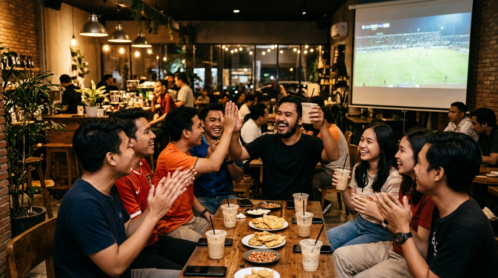
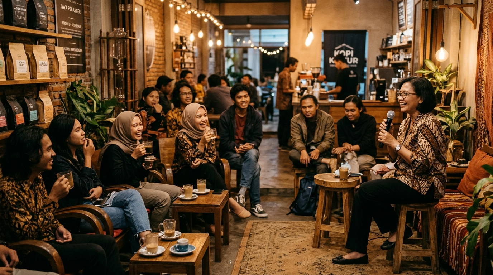
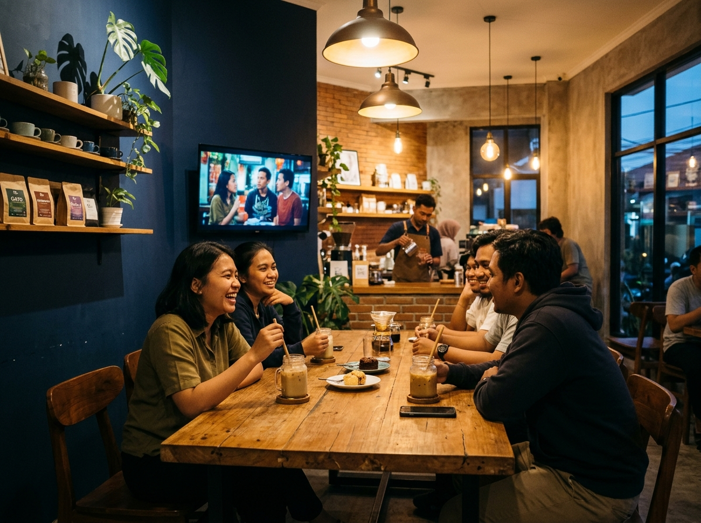
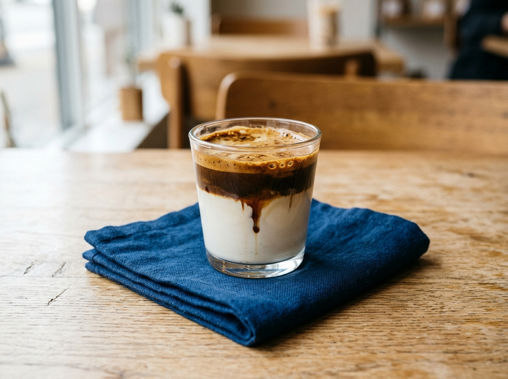
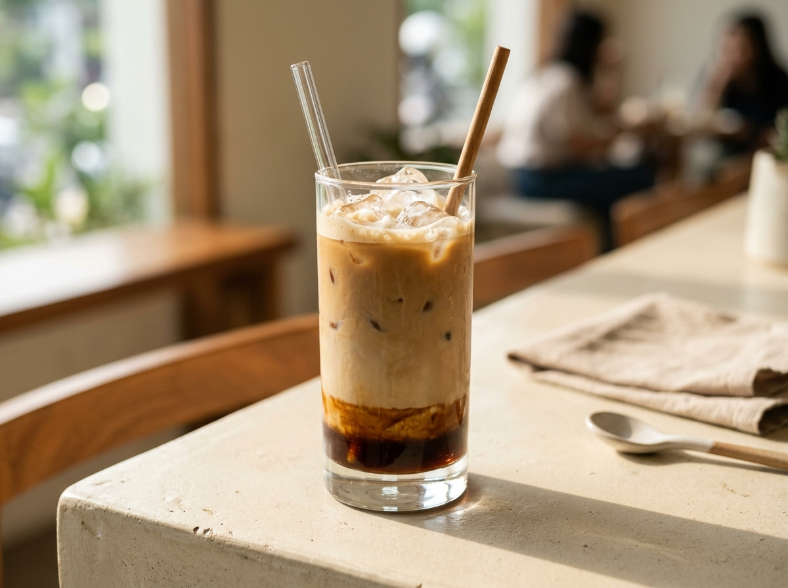

Keseruan nonton bareng laga besar dengan layar proyektor lebar di ruang utama Monokala.
Kumpulan tawa, gol menit akhir, peluh lari pagi, hingga obrolan hangat di ruang temu Monokala yang siap disambungkan dengan feed Instagram @monokalacoffee.
Menampilkan 8 item

Keseruan nonton bareng laga besar dengan layar proyektor lebar di ruang utama Monokala.

Start pukul 06.00 WIB bareng pelari kota, ditutup sarapan hangat dan es kopi susu dingin.

Sesi interaktif menentukan palet warna harian bersama mentor sambil menikmati kopi hangat.

Bincang malam tanpa sekat panggung—audiens bebas bertanya dan saling bertukar cerita.

Suasana hangat di meja komunal sebelum kickoff dimulai—saling sapa dan pesan menu favorit.

Sesi kelas kopi santai mengenali ekstraksi espresso dan paduan susu dingin di bar Monokala.

Hadiah paling dicari setelah menuntaskan lari 5 kilometer di Minggu pagi bareng komunitas.

Obrolan malam makin hidup ditemani sepiring camilan gurih di tengah meja.
Obrolan santai tapi berisi bersama praktisi, pegiat komunitas, dan kawan Monokala tentang karya dan keseharian.
Bincang bareng pendiri klub lari lokal tentang konsistensi kumpul tiap Minggu pagi sejak hanya 4 orang.
Berbagi cara realistis menjaga ritme istirahat, olahraga ringan, dan kebiasaan minum kopi yang seimbang.
Bagaimana kedai kopi bisa jadi titik temu kolaborasi lintas profesi antara desainer, penulis, dan developer.
Mengupas sisi humanis menonton bola bersama, menjaga atmosfer ramah, dan membangun persahabatan baru.